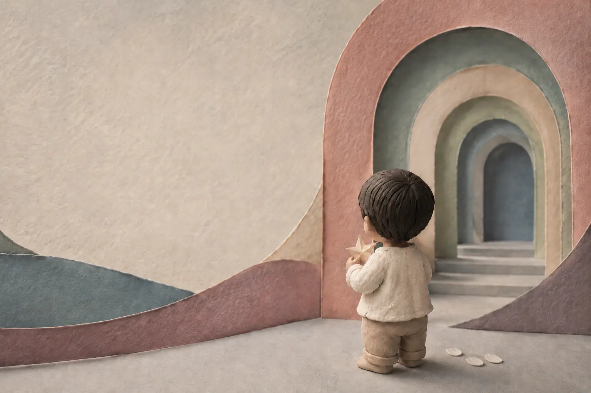
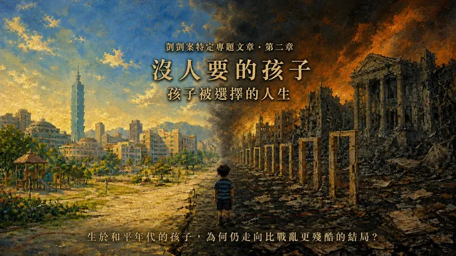
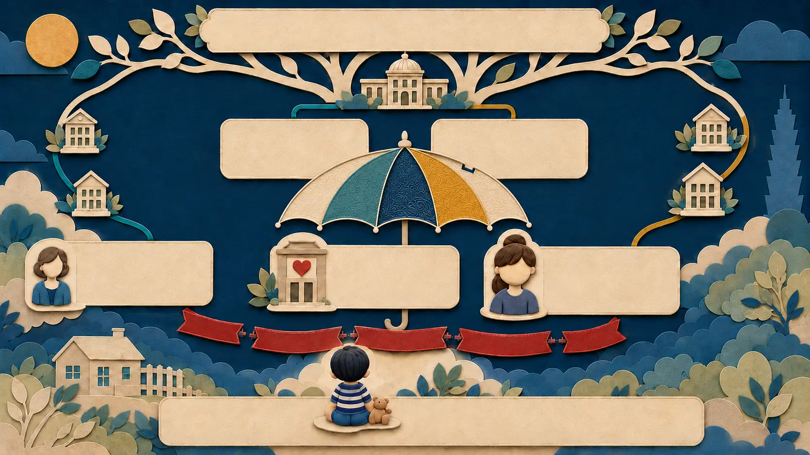
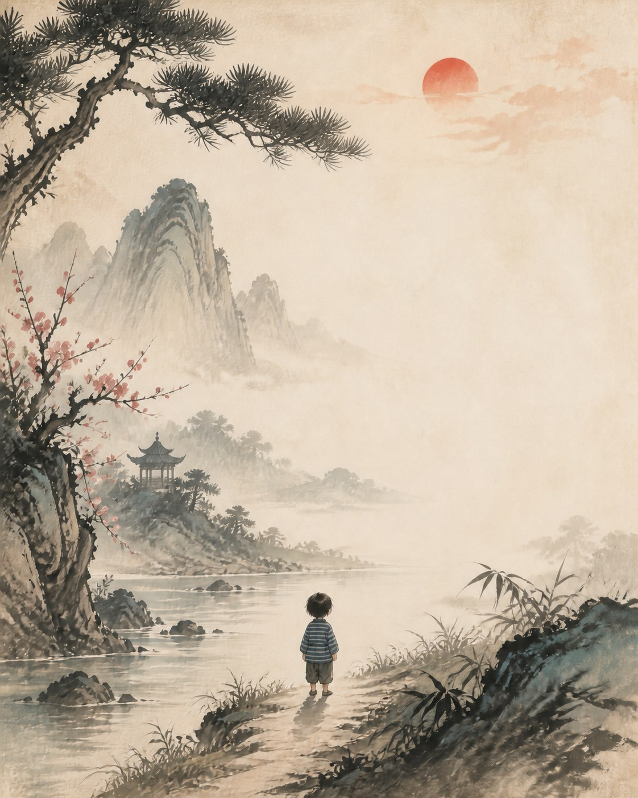
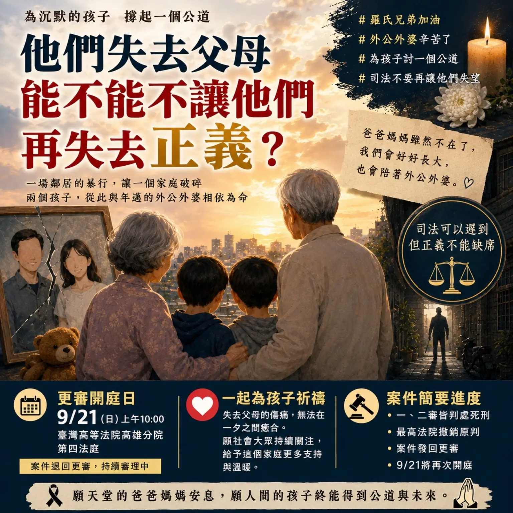

PINNED REPORTS · LATEST FIRST
注目レポート
優先して伝えたい裁判傍聴、事件追跡、法制度の考察、公共活動を、見つけやすい一つのページにまとめました。
EDITOR'S PICKS
最新の注目レポート
公開日順
-

あの問いは、すべての大人の心に落ちた
三本の乳歯、裁判官の鋭い問い、そして通告義務の法的な境界。その問いは法廷を越え、社会の一人ひとりへ向けられました。
中国語の全文を読む → -

『書ききれないほどの傷』
傍聴者が傷害分布図の鑑定説明と公開期日の情報を記録しました。
レポートを読む → -

保障人的地位｜誰に子どもを守る義務があるのか
カイカイ事件から、保護義務と作為・不作為の法的境界を考えます。
特集を読む → -

第2章｜誰にも望まれなかった子
養子縁組、ケアの引き継ぎ、制度責任を問い直します。
第2章へ → -

第1章｜親のいない孤児
椅仔姑の伝承からカイカイ事件へ。24本のアニメーションと8篇の全文。
第1章へ → -

陳尚潔事件・控訴審
9月16日14時30分、台湾高等法院・専一法廷。
期日情報を見る → -

羅兄弟冤罪事件の再審理
最新動向、事件の経緯、関連資料。
事件を読む → -

皆さまの支援を、次の守りへ
1月11日の児童保護デモの活動公費残額27,128元を全額寄付しました。
お知らせを見る →